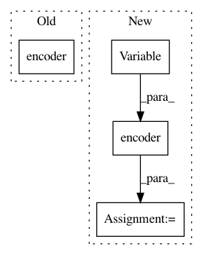

a7a5cdc598afd6afa3d0e9d355360bebc4947c29,snli/model.py,SNLIClassifier,forward,#SNLIClassifier#Any#,59
Before Change
Linear(seq_in_size, config.d_out))
def forward(self, batch):
premise = self.encoder(self.embed(batch.premise))
hypothesis = self.encoder(self.embed(batch.hypothesis))
answer = self.out(torch.cat([premise, hypothesis], 1))
return answer
After Change
prem_embed = self.embed(batch.premise)
hypo_embed = self.embed(batch.hypothesis)
if self.config.fix_emb:
prem_embed = Variable(prem_embed.data)
hypo_embed = Variable(hypo_embed.data)
if self.config.projection:
prem_embed = self.relu(self.projection(prem_embed))
hypo_embed = self.relu(self.projection(hypo_embed))
premise = self.encoder(prem_embed)
hypothesis = self.encoder(hypo_embed)
scores = self.out(torch.cat([premise, hypothesis], 1))
return scores
In pattern: SUPERPATTERN
Frequency: 3
Non-data size: 4
Instances
Project Name: pytorch/examples
Commit Name: a7a5cdc598afd6afa3d0e9d355360bebc4947c29
Time: 2017-01-24
Author: bryan.mccann.is@gmail.com
File Name: snli/model.py
Class Name: SNLIClassifier
Method Name: forward
Project Name: batra-mlp-lab/visdial-challenge-starter-pytorch
Commit Name: 61421e8d341312e02dff23b46acde4261808dab3
Time: 2018-07-06
Author: karandesai281196@gmail.com
File Name: train.py
Class Name:
Method Name: